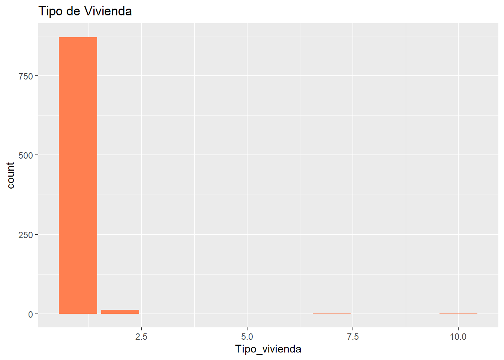
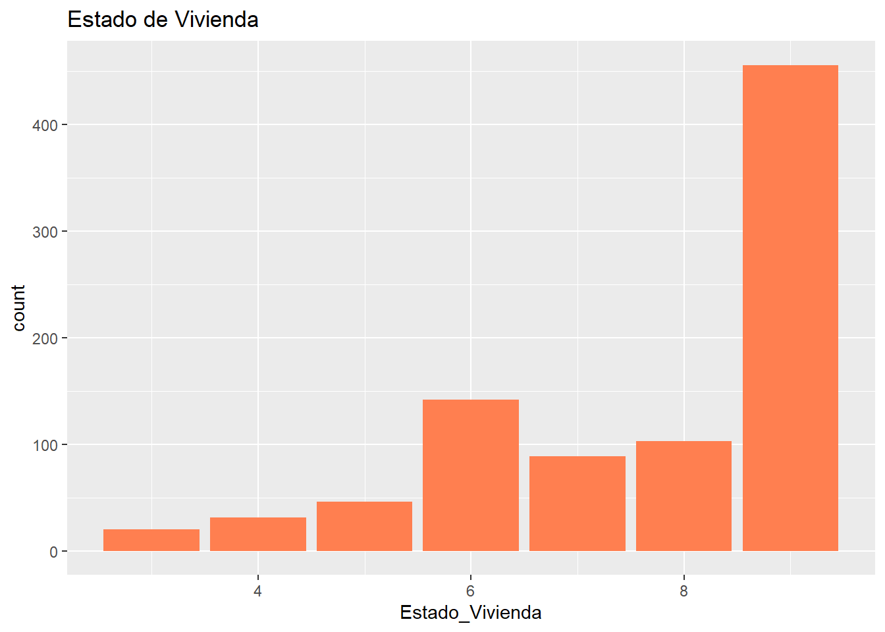
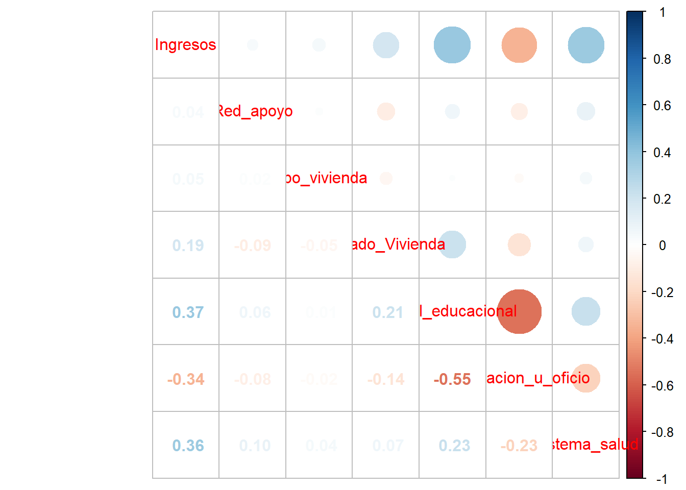

Análisis de la pobreza multidimensional en los sectores rurales de Chile: estudio local en la región del Bío-Bio.
La pobreza en Chile ha sido un fenómeno que ha acompañado al desarrollo del país constantemente y la medición de esta se ha realizado de manera más formal y sistemática a partir de la aplicación de la Encuesta de Caracterización Socioeconómica Nacional (CASEN), la cual ha implementado la medición de la pobreza multidimensional a partir del año 2013 (Herrera, n.d.), con el fin de aportar a una comprensión más amplia y detallada de las condiciones de vida de la población, implementando dimensiones como educación, salud, trabajo, vivienda y redes sociales.
Ahora bien, si llevamos esta medición de la pobreza multidimensional a los sectores rurales, podremos ver como los indicadores multidimensionales nos permiten agudizar el análisis, permitiendo así obtener una información mas detallada de las condiciones de vida de las personas en los sectores rurales del país.
Según un análisis comparativo de las carencias y brechas en los hogares rurales de Chile, se plantea que, a nivel general, las carencias se encuentran mas acentuadas en las zonas rurales y que estas se agudizan al utilizar indicadores multidimensionales para su medición. (Rodríguez-Garcés, Muñoz-Soto, and Padilla-Fuentes 2018) Por lo que llevar a cabo un análisis de la evolución de estos indicadores en comparación a sectores urbanos, nos proporcionará una información más detallada de las condiciones de vida de estos sectores.
Por otro lado, cabe señalar que la relación entre educación, ruralidad y pobreza no es algo sencillo, y si consideramos el rol de la educación a la hora de reducir la brecha de desigualdades en las oportunidades, podremos observar que la educación para la población rural ha sido escasamente atendida. (Vera-Bachmann 2015) Esto ha llevado a que la brecha de desigualdad social se mantenga en el país.
Para los efectos de este trabajo consideraremos las definiciones manifestadas por el Ministerio de Vivienda y Urbanismo en el decreto N° 47, (decreto1992?) en el cual se refiere a un Área urbana como la superficie del territorio ubicado al interior del límite urbano; un Área rural como territorio ubicado fuera del límite urbano; y Límite Urbano como la línea imaginaria que delimita las áreas urbanas.
Con lo anterior, nos referiremos al fenómeno de pobreza multidimensional según la medida oficial de Chile, la cual incluye 5 dimensiones que son reconocidas como socialmente necesarias. Estas dimensiones son: Educación; Salud; Trabajo y seguridad social; Vivienda y Entorno; Redes y Cohesión social. (PNUD?) A lo anterior, hemos decidido agregar los ingresos, ya que estos nos servirán como un punto de referencia más claro a la hora de evaluar la pobreza multidimensional.
Ahora bien, por efectos de lo que se pretende llevar a cabo en este estudio, se acotará el estudio a la 8va región de Chile, la “Región del Biobío”, ya que esta región presenta un alto porcentaje de su población viviendo en áreas rurales.
Con lo anterior, llevaremos un análisis en base a los resultados obtenidos por la CASEN2022, con el fin de ver como se comporta la pobreza multidimensional en la región del Biobío. Para esto procederemos a manipular la base de datos con el fin de poder observar las distintas mediciones y su comportamiento.
Trabajo en R: Ajustes iniciales, carga de paquetes y base de datos:
En este punto cabe mencionar que por motivos de optimizar el documento, se trabajará con una base de datos recodificada, especificamente filtrando por la 8va región del Biobío, y por las áreas rurales, lo que lleva a un total de 4081 observaciones.
Warning: package 'pacman' was built under R version 4.2.3
pacman::p_load(haven, sjlabelled, dplyr, #Manipulacion de datos stargazer, #Tablas sjmisc, # Tablas summarytools, # Tablas kableExtra, #Tablas sjPlot, #Tablas y gráficos corrplot, # Correlaciones sessioninfo, # Información de la sesión de trabajo ggplot2) # Para la mayoría de los gráficos# 1.Base de datos:load(file ="Input/PROC_DATA.RData")
Descriptivos:
# 3.Descripción de variables:#| label: tbl-sjmisc #| #| tbl-cap: “Descriptivos indicadores Pobreza región Biobío”dim(PROC_DATA)
Si observamos brevemente la información proporcionada por la tabla descriptiva, podemos observar que una vez recodificada y filtrada la base de datos, nos quedamos con un total de 4.081 observaciones en la región del Biobío de un total de 1.556.805 millones de habitantes según el Censo 2017. Correspondientes unicamente al sector rural de la región por lo que tenemos una muestra considerablemente representativa.
A esto, podemos agregar información respecto a los ingresos promedio, los cuales son aproximadamente de $470.000. Junto a información respecto al nivel educativo de las personas, el cual en promedio indica un nivel de estudios de enseñanza media completa.
En el gráfico correspondiente al nivel educativo de las áreas rurales en la región del Biobío, podemos evidenciar como la mayor frecuencia se encuentra en el 7, lo cual corresponde a una educación básica completa.
ggplot(PROC_DATA, aes(x = Tipo_vivienda))+geom_bar(fill ="coral") +labs(title ="Tipo de Vivienda")

ggplot(PROC_DATA, aes(x = Estado_Vivienda))+geom_bar(fill ="coral") +labs(title ="Estado de Vivienda")

Por otro lado si nos fijamos en el gráfico correspondiente al tipo de vivienda y al gráfico correspondiente al estado de las viviendas, podemos observar que en las áreas rurales de la región, el tipo de vivienda predominante corresponde a un tipo de casa aislada (no pareada). En general el estado de conservación de estas viviendas, considerando piso, murallas y techo, se considera aceptablemente bueno.
Ahora bien, a modo de analizar como se relacionan estas variables para describir la situación de pobreza multidimensional en las áreas rurales de la región del Biobío, veamos la siguiente tabla de correlaciones:
Computed correlation used pearson-method with listwise-deletion.
corrplot.mixed(COR_PROC_DATA)

Podemos observar que las relaciones significativas se encuentran asociadas a la relacion entre Ingresos y Nivel educacional (0,375), junto a la relación entre Ingresos y Sistema de Salud (0,361). Esto sugiere que la relación aceptable entre el ingreso y el nivel educacional junto al sistema de salud, son aquellas variables que mayor relación poseen.
Por otra parte, para observar la consistencia del conjunto de variables que hemos seleccionado para medir el fenómeno aplicaremos un test de Alpha de Cronbach para obtener información sobre la fiabilidad de la escala compuesta por dichas variables:
psych::alpha(PROC_DATA, check.keys =TRUE)
Number of categories should be increased in order to count frequencies.
Warning in psych::alpha(PROC_DATA, check.keys = TRUE): Some items were negatively correlated with total scale and were automatically reversed.
This is indicated by a negative sign for the variable name.
Esta tabla nos muestra los resultados del análisis de fiabilidad, demostrando que entrevariables del conjunto existeuna consistencia interna moderada, de 0.54.
Ahora bien, si aplicamos otro análisis de fiabilidad, sin considerar las variables de Red de apoyo (Red_apoyo), Tipo de vivienda (Tipo_vivienda) y Sistema de salud al que pertenece la persona (Sistema_salud), podemos notar que el índice de fiabilidad correspondiente a Alpha de Cronbach, aumenta a 0.63, como se ve en el siguiente análisis.
Warning in psych::alpha(dplyr::select(PROC_DATA, Ingresos, Estado_Vivienda, : Some items were negatively correlated with total scale and were automatically reversed.
This is indicated by a negative sign for the variable name.
Finalmente, podemos dar cuenta de que la consistencia de las variables del conjunto es considerablemente aceptable, por lo que la medición de la pobreza multidimensional en áreas rurales de la región del Biobío
References
Herrera, Heidi Berner. n.d. “Pobreza Multidimensional en Chile: Una nueva mirada.”
Rodríguez-Garcés, Carlos René, Johana Muñoz-Soto, and Geraldo Padilla-Fuentes. 2018. “La Reconfiguración Del Mapa de La Pobreza Multidimensional En Chile.”Civilizar 18 (35): 53–72. https://doi.org/10.22518/usergioa/jour/ccsh/2018.2/a05.